TV Mountain
geschrieben am Friday, May 3, 2013
Also zersch mol sorry, ich ha mich jetzt grad scho recht lang nüm gmolde. Aber äs isch vieles gange. Under anderem isch dä Balz do gsi für meh als zwei Wuche und zu allem Übel ane hed är mir denn au no sKabel fürd Kamera gstohle :-)
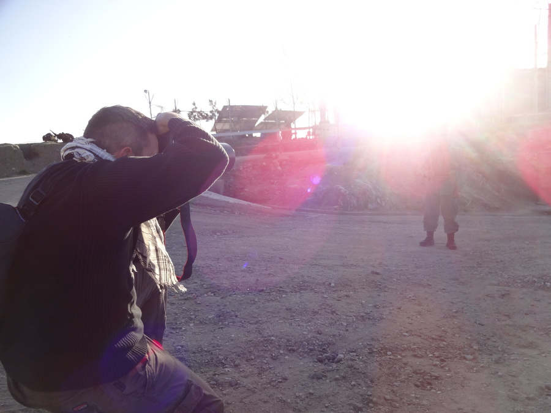Ich Hoffe dasi jetzt wieder chli regelmässiger cha härähocke und was schriebe. Äs gseht zumindest nid schlecht us, wili jetzt sehr viel Material ha.
Mir händ zämä relativ viel undernoh und eine vo üserne Usflüg isch dä zentrali Berg in Kabul gsi (heisst TV Mountain wil alli Fernseh/Handy Antenne druf stönd). Kabul isch um Berge umäbaue.
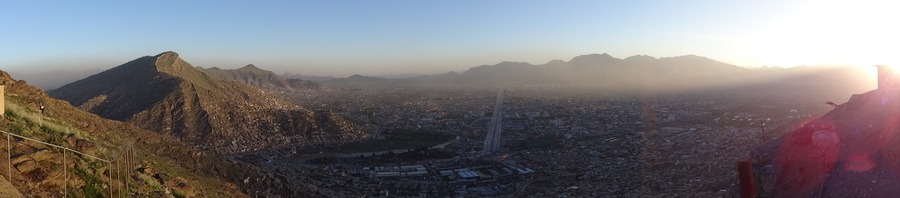Do no äs chlises Filmli:
Dä Grund wieso ich soviel über dä Berg schriebe hed chli mit dä Gschicht vo Kabul ztue. Im Chrieg zwüsched dä verschiedene Warlords (Mujahedin) isch dä Hügel so än Trennpunkt gsi zwüsched verschiedene Stadtteil und somit verschiedene Warlords. Mol händen di einte ignoh, mol di andere.
(Chlini Amerkig zum Video: Dä Massoud - Northern Alliance isch nid würkli dä schuldig a dem ganze. Da isch dä einzig wo no bitzli normal gsi isch. Alles andere (z.B. Hekmatyar) sind totali Psychopathe gsi, chönder gern i dä Gschichtsbüecher nolese)
Übrigens: Uf das Quartier wo gschosse würd mit äm Maschinegwehr und dä 3 Rakete isch das wo ich jetzt drin wohne. :-) Äs isch unglaublich das dött drinne au während äm Bürgerchrieg ä Organisation namens IAM sit 1966 in Afghanistan schafft. Ä denkwürdigi Leistig. Die sind während dene Beschüss drinne gsi und während dä Taliban.
D'Stross ab 0:30 gseht hüt öppe so us:
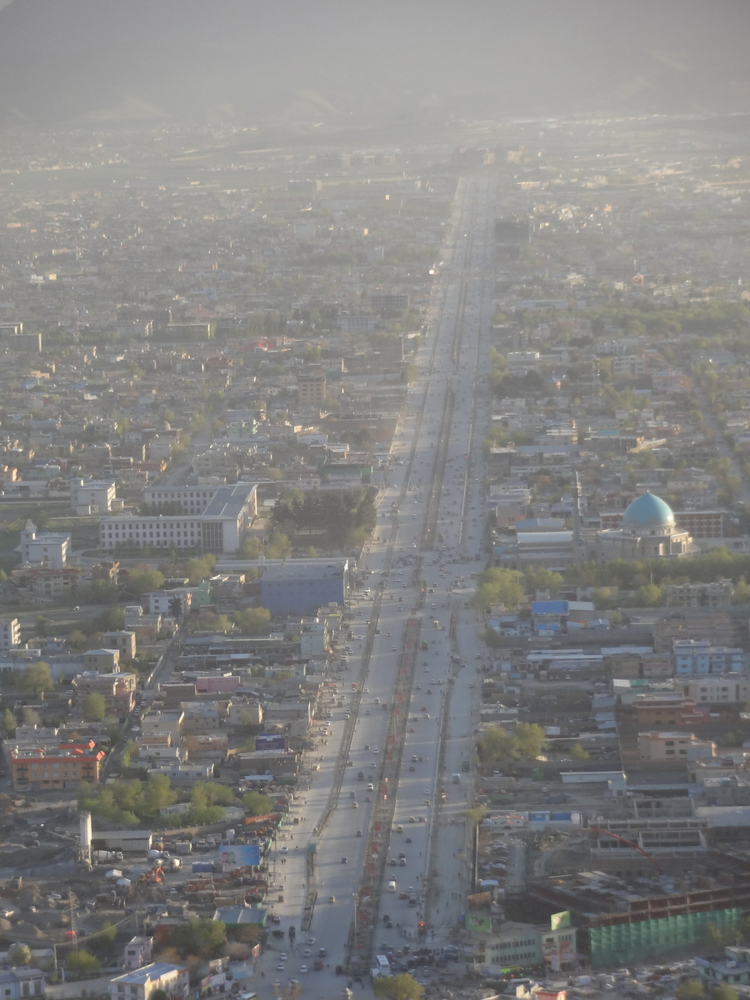Än unglaubliche Unterschied! Das sind 11 Johr Umbau!!! Kabul hed sich so unglaublich veränderet. Überall werded Bäum pflanzt. Eifach nur schön das zgseh. Vor allem ischs enorm schön dä Fortschritt dörfe zgseh wenn mer immer überall über die korrupte Politiker (unter anderem Karzai) redt. Die sind korrupt wie nüt aber glichzitig isch sich vor allem Kabul glich am entwickle. Also eigentlich hani dä Artikel gmeint. Äs isch jo irgendwie scho ironisch das sich dAmis wo sich gross dä Kampf für dDemokratie ufd Stirn gschriebe händ, dDemokratie denn sehr direkt wieder mit Korruption bekämpfet. Aber das isch äs anders Thema...
Ä chlini Gschichtslektion
Das Bispiel zeigt eifach wie mit däm Land umgange wird. Afghanistan isch än Spielball vom Weste und dä Araber. Au jetzt no. Pakistan finanziert immer nod Taliban und isch sehr dra interessiert Afghanistan zdestabilisiere mit ihrem Gheimdienst (das isch dä Grund wieso dAfghane di pakistanisch Regierig so hassed). Dur dä pakistanisch Gheimdienst sind i dä 80er Johr über 3 Mia. $ Ami Stürgelder gflosse (und dött hed dä Dollar no was Wert ka), sowie X Millione arabischi und sogar chinesischi Gelder um dRusse zbekämpfe. Wo denn dRusse gange sind hed sChaos ersch agfange. Jedes arabische Land hed sini eigene Warlords unterstützt und denn händ sichs mol dChöpf igschlage. Zum Glück für Kabul sind denn irgendwenn dTaliban cho. Die händ uf grausami Art und Wis Friede gschaffe. Händ jede umbrocht wo sich ihne wiedersetzt händ und wenn öpper was gstohle hed händs äm dHänd abghackt. Lut mine Kollege do sig das di friedlichschti Ziit gsi in Afghanistan. Sie heged chönne Reise wies händ wele. Das isch au eine vo dä Gründ wieso das dTaliban nid total verachtet werded. Sie händ äm grausame Bürgerchrieg äs end bereitet (nei dTaliban händ nid mitkämpft im Bürgerchrieg, die sind usem Süde cho und alli Warlords sind us Kabul abghaue wils so gschwächt gsi sind).
Naja mä dörf jetzt nid sGfühl ha das dTaliban irgendwie "guet" gsi sind. Das sind Vollidiote wo jeglichi Art vo Kunst und fasch alle Sport verbote händ, dFraue i Burkas gsteckt händ und alles usgrottet händ wonene nid passt händ. Git ganz übli Gschichte, vo Doktore wo zwunge worde sind zum Lüt Händ abzhacke, etc. Aber äbä mängmol isch eis Übel weniger schlimm wie äs anders.
d'Awendig i dä IT
Nochdem mir uf äm TV Mountain gsi sind händ mir wiedermol ä Netzwerk-Lektion ka. Isch um MTU gange, wilses nid kapiert händ isch däbi folgendi Erchlärig entstande:
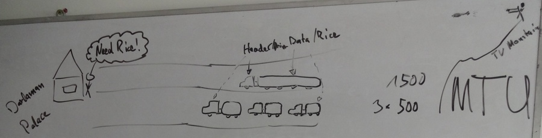Natürlich nur für IT-Nase verständlich, aber has irgendwie Amüsant gfunde das mer cha d'MTU analog darstelle mit unterschiedlich grosse Riistransporter wo vom TV-Mountain beschosse werded. :-)
Di schöne Bilder
Wil dä Balz do isch gits notürli au no paar schöni Bilder vo däm Hügel:
D'Uffahrt (mä brucht än guete Charre zum ufächo):
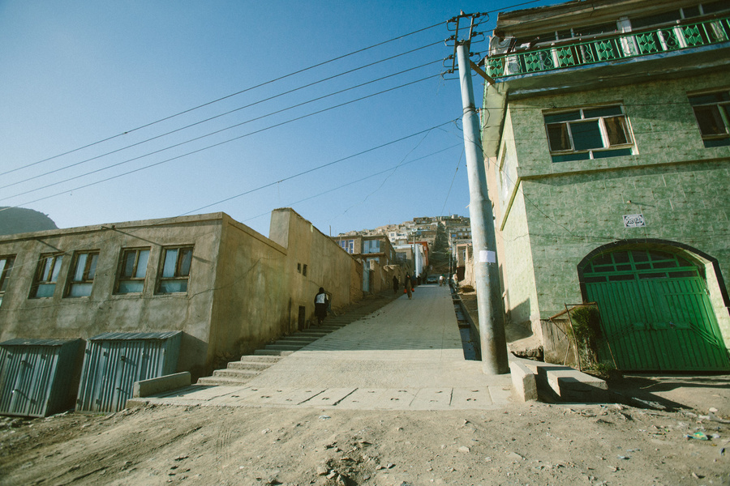 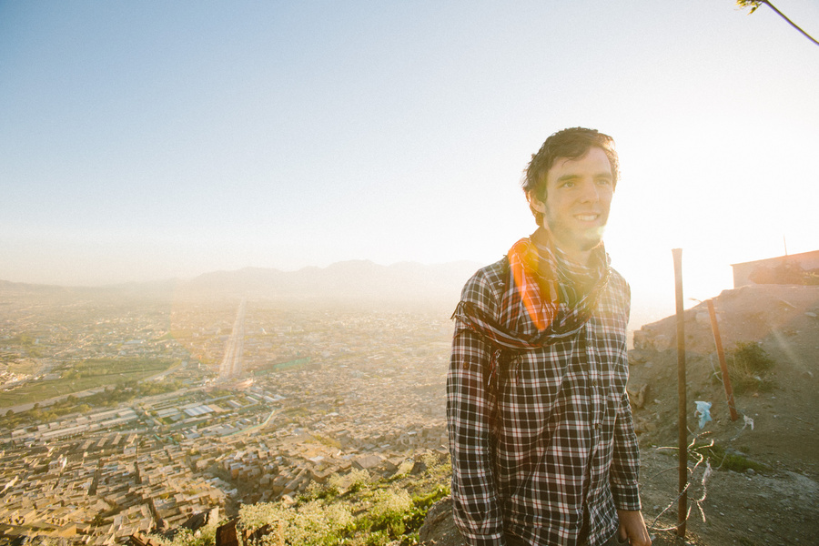Ä schöni Sicht uf di umliegende Häng...
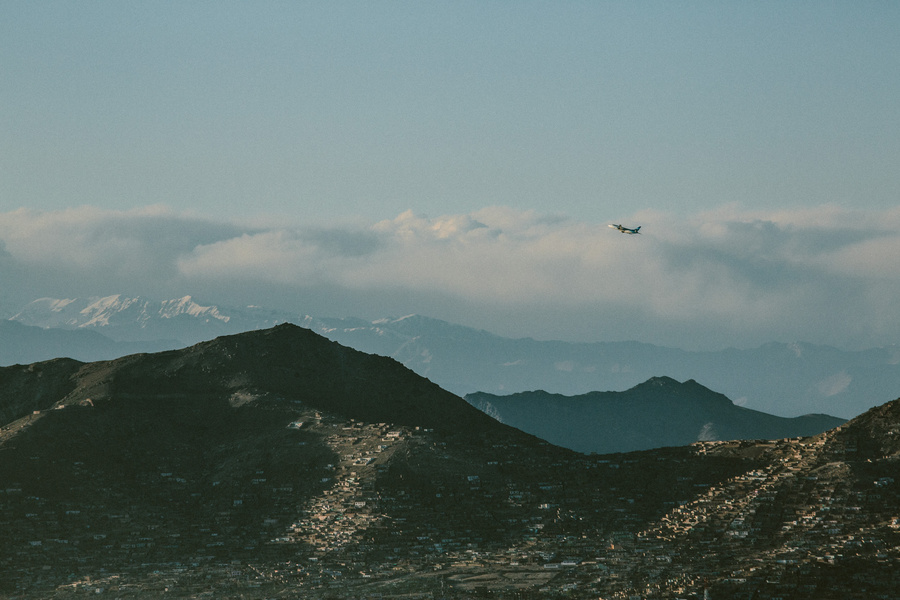... wo sich vo nöchem scho sehr ärmlich zeiged
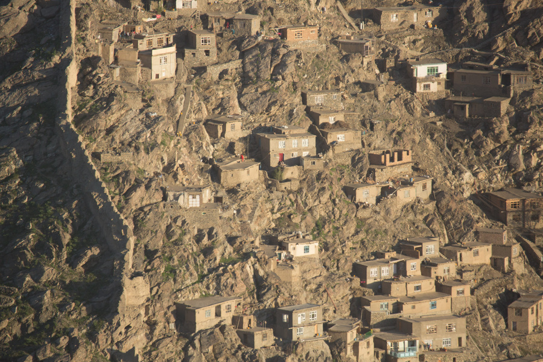Immer und überall im Azug (au wenn alles voll Dreck und Staub isch) :-)
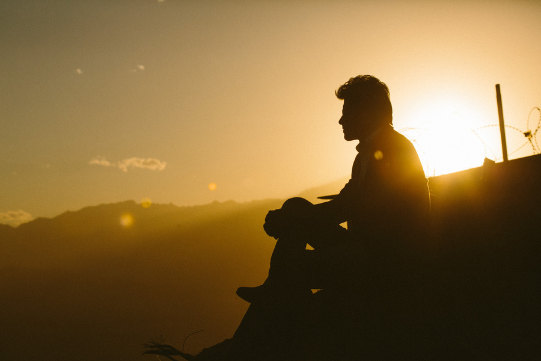Mir sind notürlich mitere Gruppe Afghane gange.
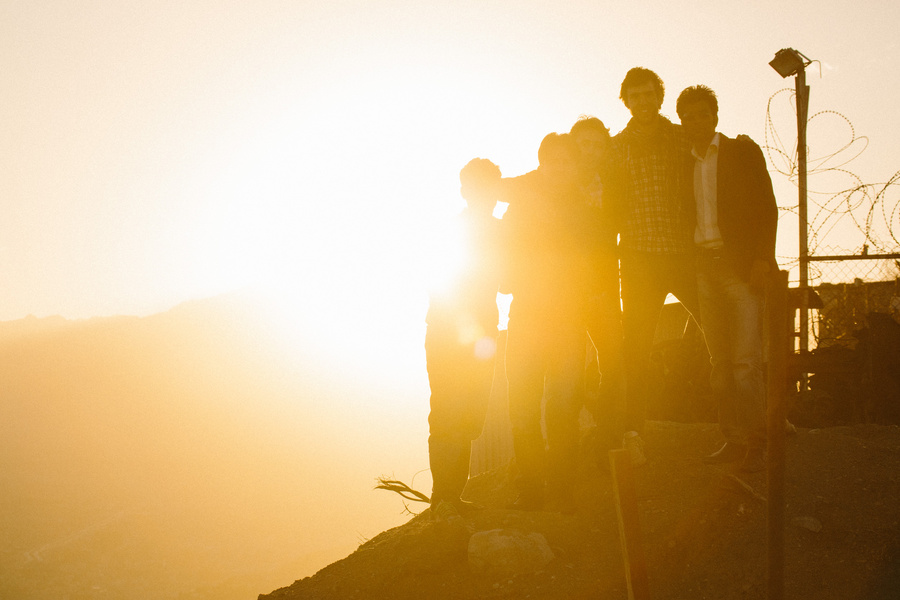Und no eis vom abäfahre:
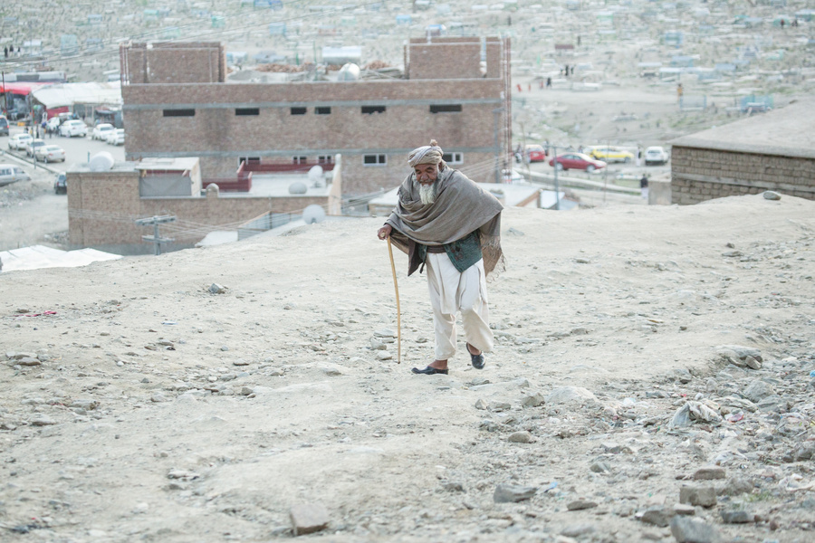